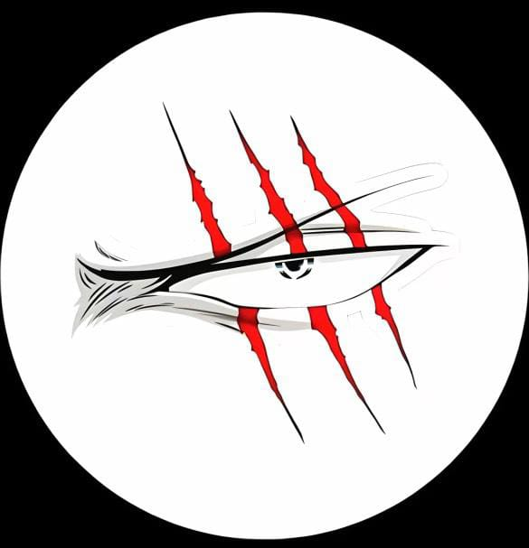

Shanks, also known as "Red-Haired" Shanks, is the legendary captain of the Red Hair Pirates and one of the Four Emperors (Yonko) in the One Piece universe. He is most famous for inspiring the series' protagonist, Monkey D. Luffy, to become a pirate and for entrusting him with his iconic straw hat